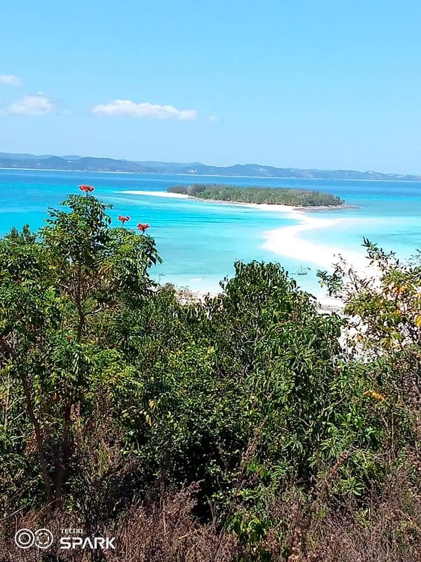

Nosy-Be
Destination: Nosy Tany Kely
Tany Kely est l'un des plus beaux sites marines. C'est une île faisant partie de la commune urbaine de Nosy Be. Ces eaux sont des aquariums vivants (tortues de mer, différents poissons, ...) avec des fonds marins inoubliables. Depuis son phare, une vue panoramique exceptionnelle sur les alentours s'offrent à vous. Et l'île contient un musée pour le côté historique. Contacter
Destination: Mont Passot
Mont Passot est un spectacle panoramique à 329 mètres d'altitude. On compte sur ses alentours des dizaines de lacs sacrés. Il est possible aux randonneurs de découvrir des cascades et la biodiversité locale en se promenant sur les chemins de ces lacs sacrés. Mont Passot est surtout réputé pour son point de vue à 360° sur Nosy Be. L'endroit parfait pour admirer un coucher du soleil. Contacter
Ambanja
Destination: Compagnie Millot
Millot est une compagnie spécialisée dans l'exploitation du cacao. Enfaite, la ville d'Ambanja produit des tonnes de cacao. La visite de cette usine permet de découvrir comment se plante le cacao, comment le cacaoyer grandit et comment le cacao se transforme en chocolat. En plus de cela, cette compagnie cultive d'autres sortes de plantes (ylang ylang, café, ...) Contacter Voir plus